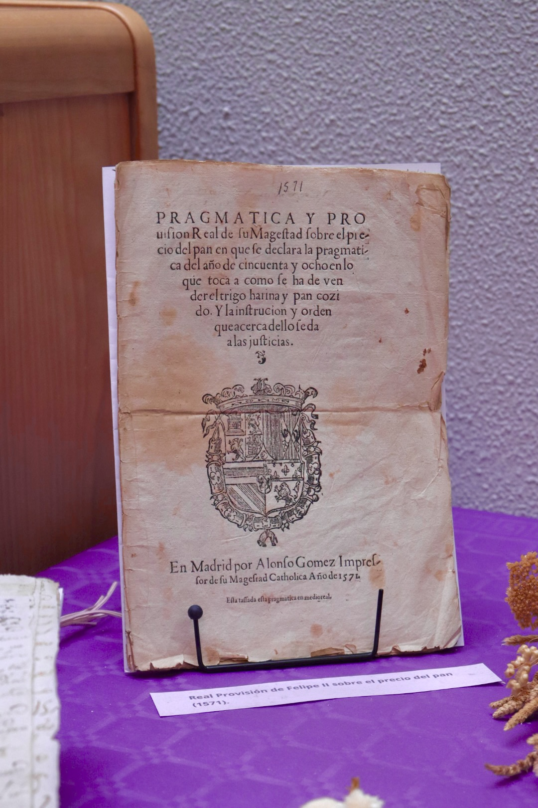
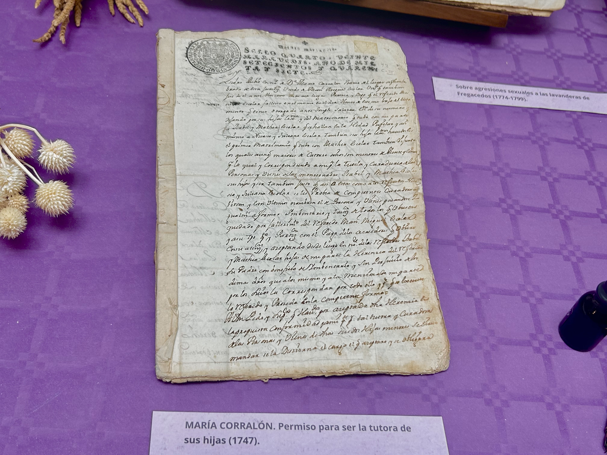
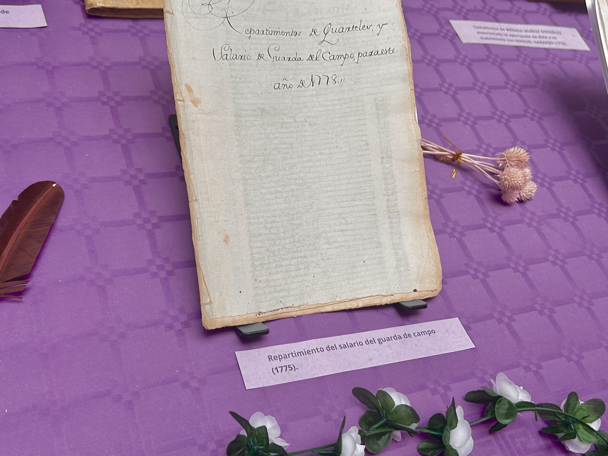
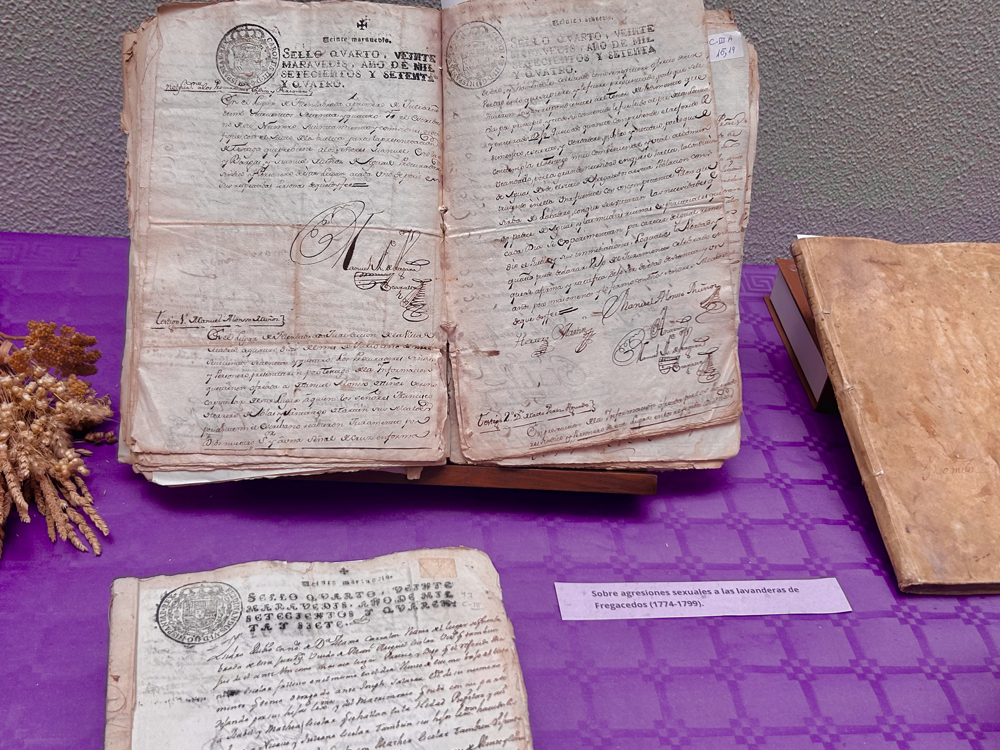
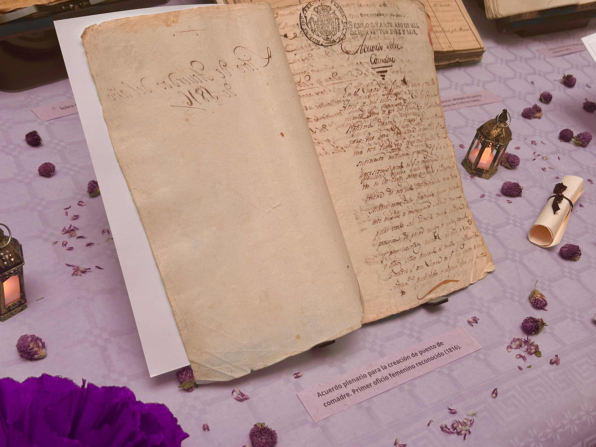
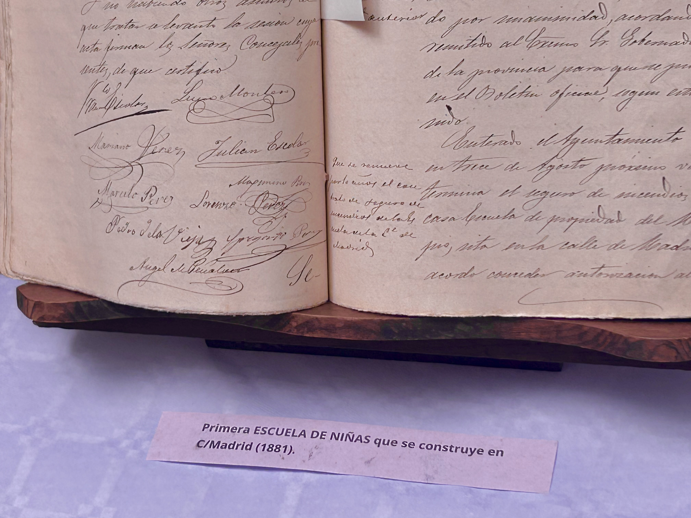
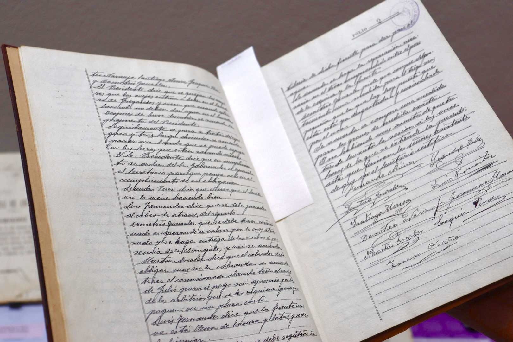

Nos adentramos en el Archivo del Ayuntamiento de Fuenlabrada para explorar la historia de la ciudad y el papel de la mujer en ella. Entre estanterías y papel antiguo, nos adentramos en la historia para hablar de aquellas voces que han sido silenciadas.
A veces olvidamos algo muy básico: las mujeres son la mitad de la población, siempre han sido la mitad de la gente, la mitad de las manos que ayudaron a construir y hacer de Fuenlabrada la ciudad que conocemos hoy. Pero al echar un vistazo a los documentos, esa mitad nunca tiene nombre. Miles de nombres, de personas que contribuyeron, borrados bajo la firma de los que escribían.
Con Dalila Álvarez, jefa del archivo y Erica, archivera del ayuntamiento, empezamos el recorrido por la historia, para recordar y aprender del largo y complicado camino de la mujer de Fuenlabrada.
Siglos XVI-XVIII

Comenzamos nuestro viaje con el documento más antiguo de Fuenlabrada: La Real Provisión de Felipe II de 1571. En este documento, el rey fijaba los precios del trigo y el pan para que nadie se aprovechara y así proteger a los más pobres. Pero, detrás de esa escritura oficial, vemos una sociedad agrícola muy dura; mientras los hombres trabajaban las tierras, las mujeres de Fuenlabrada vivían para la casa, los hijos y el trabajo en fuentes y lavaderos. Las mujeres carecían de identidad propia, su rol era de madre, sirvienta, esposa y cuidadora.

Si avanzamos, el archivo nos muestra el caso de María Corralón en 1747, una viuda que tenía propiedades, pero de cara a la ley, sin marido que las administrase. Tuvo que pedir permiso al juez para cuidar de sus propias hijas. Este papel muestra que no se fiaban de las mujeres. Si no había marido, dudaban de que una madre pudiera manejar el futuro y el dinero de sus hijos.

Las mujeres eran casi invisibles, y lo podemos reiterar en el documento de 1775 sobre el sueldo del guarda. En esa lista de quién pagaba al vigilante del campo, los nombres de las mujeres desaparecen. Solo ponían Viuda de, Mujer de... Pagaban impuestos y ayudaban a la economía, pero solo eran un reflejo de los hombres con los que estaban, o habían estado casadas.

A finales del siglo XVIII, vemos la cara oculta del día a día de las mujeres; al no ser vistas como individuos, solo servían como objetos de deseo, ya fueran correspondidos o no. Entre 1774 y 1799, el Consejo recibió varias quejas sobre las chicas que iban a lavar ropa a la fuente de Fregacedos. Para lavar, estas mujeres caminaban dos kilómetros y medio, solas y cargadas. Los archivos muestran que vecinos, hasta el cura, contaban que pastores y viajeros las asaltaban en ese camino.
Aún así, el lenguaje de estos documentos de 1790 demuestra cómo la preocupación no era la seguridad o el bienestar de las chicas, sino que se les arruinara espiritualmente y se deshonrara a los padres. Por 25 años pidieron al Rey permiso y plata para llevar el agua al pueblo, no para que fuera más fácil, sino para protegerlas. Si lavaban cerca de casa, las vigilarían mejor y su honra estaría a salvo en el camino. Una honra que era más de sus padres y maridos que suya.
Siglo XIX

En el Siglo XIX vemos un cambio en el papel de la mujer; dejan de ser sólo nombres en papeles de dotes o deudas y aparecen por primera vez en los presupuestos públicos. En 1816, el ayuntamiento de Fuenlabrada creó oficialmente el puesto de comadre ya que había muchísimas muertes en partos, tanto de los infantes como de las madres. Así, se creó el primer trabajo femenino pagado por el Ayuntamiento.

Otro gran avance fue la creación de la primera escuela para chicas en 1881. Aun así, hemos de ser conscientes de la diferencia en el material educativo. A ellos les enseñaban cuentas y lógica para desenvolverse en el mundo, pero a ellas solo a leer, escribir y, sobre todo, a las labores del hogar.
Siglo XX

Al avanzar al siglo XX vemos, al inicio una mejora en la calidad de vida de las mujeres, pero que se verá completamente anulada con la llegada de la Guerra Civil, y posteriormente el gobierno franquista. El 10 de junio de 1939, un acta municipal negaba la pensión a la viuda de Zacarías Hernández, en ese tiempo, secretario del Ayuntamiento. Estas acusaciones no se hacen en base a falta de pagos o errores administrativos sino juzgando su vida personal.
En el documento se le acusaba de "conducta inmoral" y de estar "entregada a los lujos". Es un retrato fiel de una época donde no solo se gestiona desde las administraciones los impuestos, sino como jueces sobre la conducta y decencia femenina. El hambre y la precariedad se utilizaban como herramientas de castigo para aquellas personas que se salían de la norma.
Tras el fin de la dictadura
En los años sesenta vemos cómo Fuenlabrada pasa de ser un pueblo pequeño a una gran ciudad dormitorio. Con el fin de la dictadura llegó la revolución social, donde las mujeres alzaron la voz otra vez. El archivos nos muestra grupos como El Alba, asociaciones de amas de casa que, mientras sus esposos trabajaban, encabezaron protestas en las calles pidiendo escuelas, hospitales y agua potable para una población en constante crecimiento.
Esa presión de los vecinos se vio en el gobierno local en 1979, año en que el archivo anota un momento importante: el acta de la primera administración elegida por el pueblo, donde está Felisa Manuela Caro Cárdenas, la primera concejal de Fuenlabrada.
Al final, después de revisar todo el archivo, una cosa nos quedó clara: Las mujeres siempre han formado parte de la historia; la diferencia es que ahora son ellas las que han de reescribirla. Ya no están atrapadas por el pasado, sino que lo usan como base para decidir quiénes son y cómo quieren que la gente de Fuenlabrada las recuerde.